While most of my recent work is under NDA, here are a few projects I'm proud of.
Project Fidget
RCA Solo Project
Fidgeting is a very human thing to do, and can be a valuable technique to manage attention.
I interviewed an ADHD specialist at Imperial College, who gave me insight into the way fidgeting aids focus. It creates a hormonal stimulant effect, leading to serotonin and dopamine production. I set out to design useful fidget tools that don't create noticeable distractions in a shared space, like a classroom.
Referencing satisfying textures that mimic nature I prototyped a "Fidget Pet" — a smooth organic shape designed to fit in the hand with textural ears that are satisfying to touch, and an animal-like purring response. It contains a fabric-based piezo-electric touch sensor, an arduino microcontroller and a small motor.
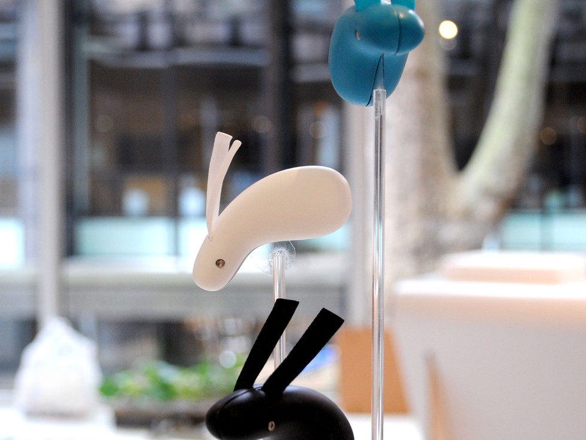
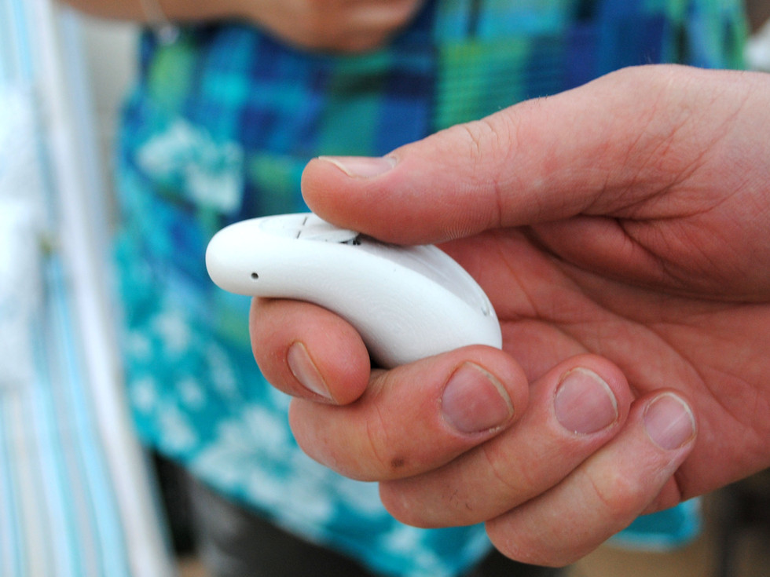
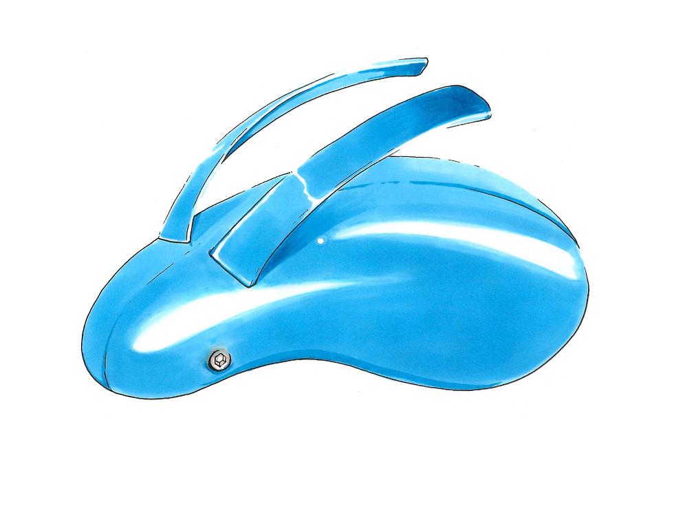
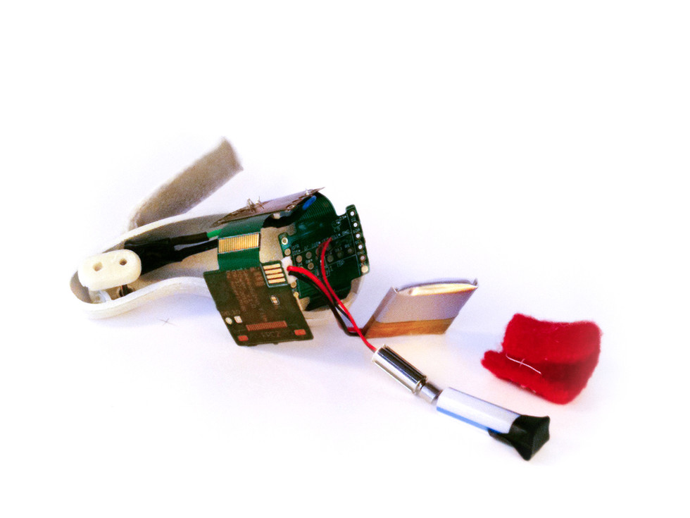
Canary D Pad
RCA Group Project
For our final year group project we set ourselves the challenge to design a subtle lifestyle intervention to help people monitor their health.
We began investigating the everyday situations for non-invasive testing. We decided on a sanitary towel which offers an easy everyday check-in for the signs of prediabetes, both effective and needle-free.
We prototyped a design that can be produced using conventional sanitary pad production lines. While the test is not diagnostic it can give a warning signal and raise awareness. Elena Figus and Susan Cook, 2010
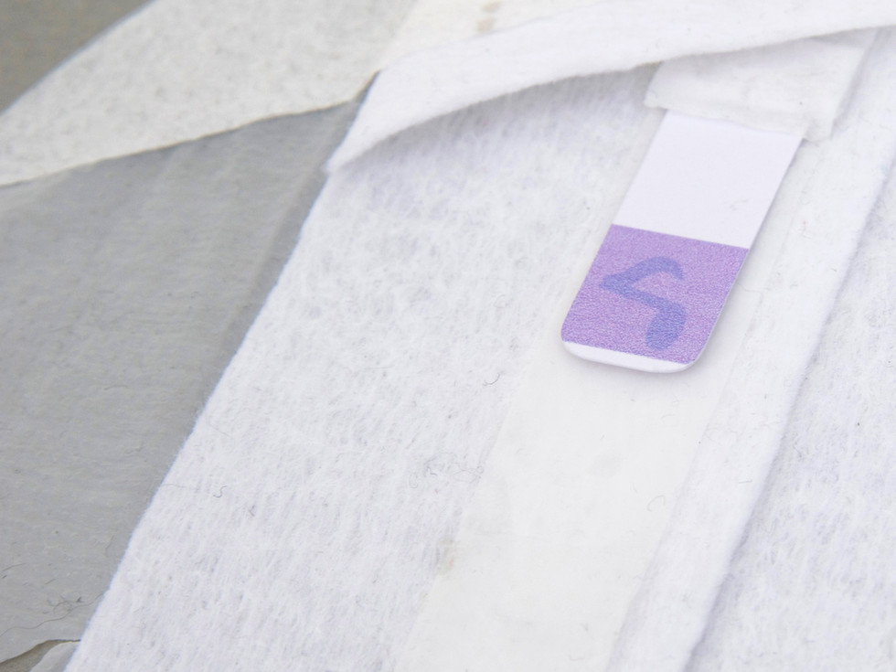
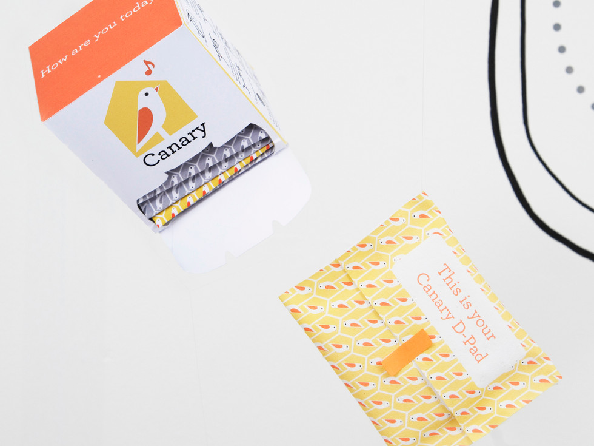
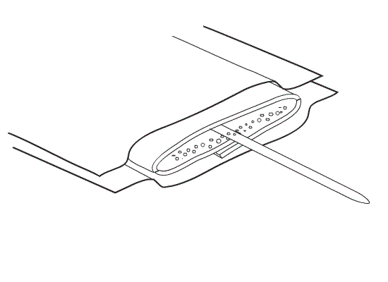
Go Global Ghana
RCA
The Go Global project brief was to develop a premium product made in Ghana with a Ghanaian aesthetic for world wide markets. We worked using old, worn out bicycle tyres because the layers of colour showing through were visually interesting, as well as providing a tough shell for a laptop case. This material was cleaned and reused using processes found in the Kumasi marketplace. Traditional Batik printing was used for the lining, in a tyre inspired design.
This project was a 2009 Collaboration with Mawuli Dogbatse at Kumasi University, Ghana.
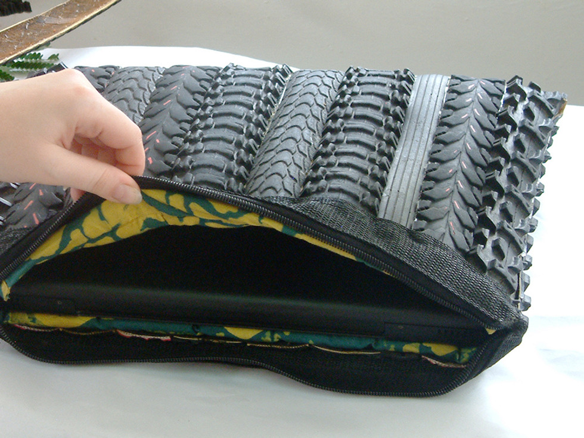
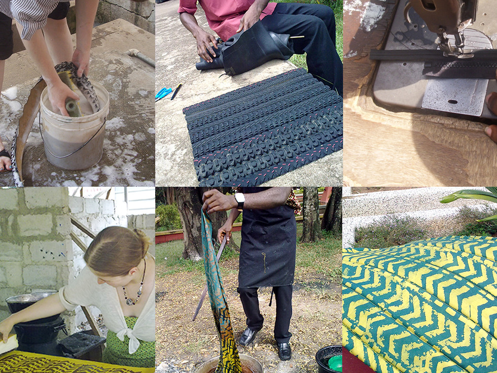
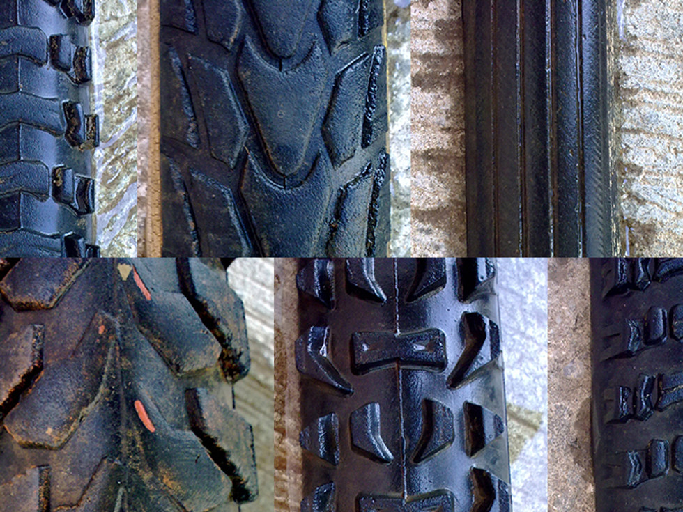
The Human Tide
LAB Project
When Rob Lawrence asked us to make him a seven meter light stick, I jumped at the chance to be part of an amazing film to celebrate Duchamp's centenary. Using our stick, and with a new technique using a 3D mirror rig, Rob created a piece of long exposure footage, inspired by Duchamp's piece "3 standard stoppages".
I also used found objects to create a "Duchampian" device for measuring the depth of the water. We rigged up a bicycle wheel, a sensor made from a serial cable, a handle from a croquet mallet, an arduino and a speaker. It emitted a series of piano-like tones to indicate water depth and created a clicking sound every metre it was pushed. These ambient sounds were then used as part of the soundtrack produced by renowned electronic artist Paul Hartnoll of Orbital.
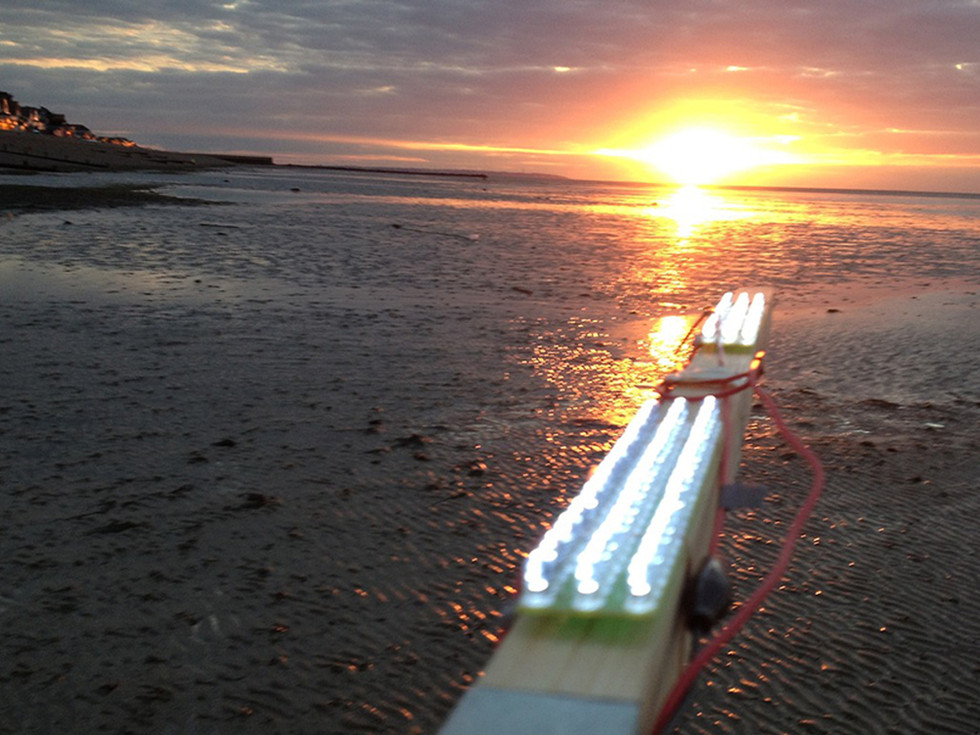
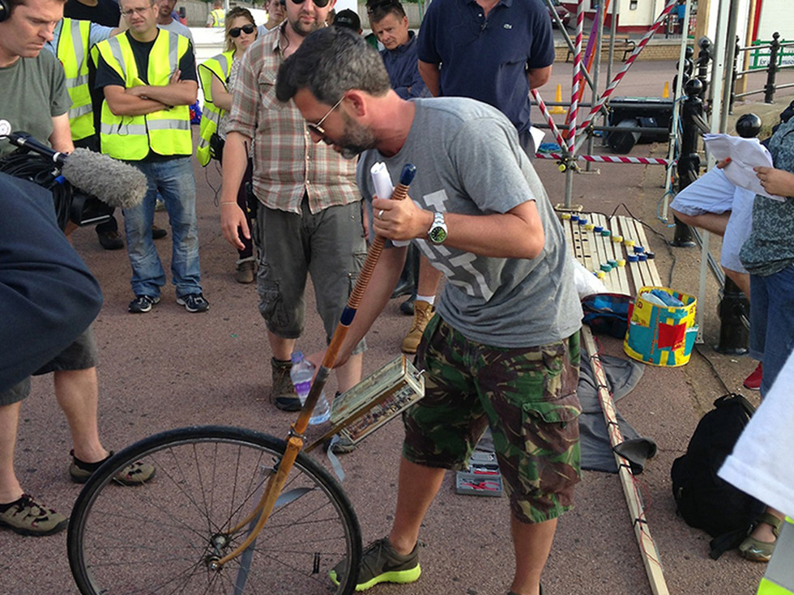